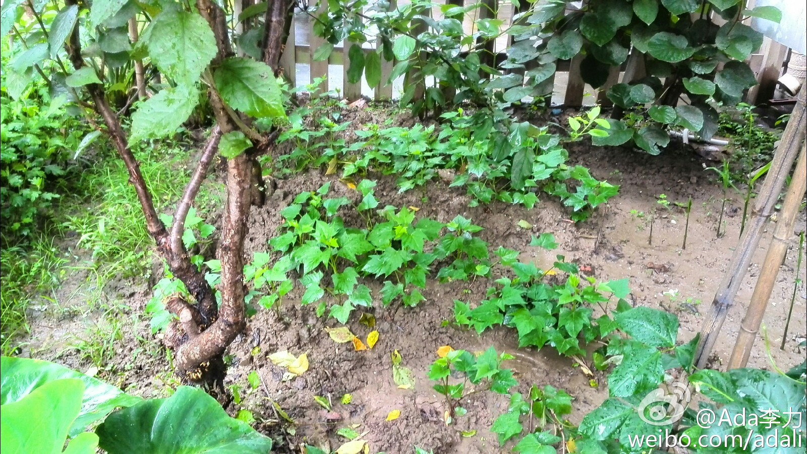
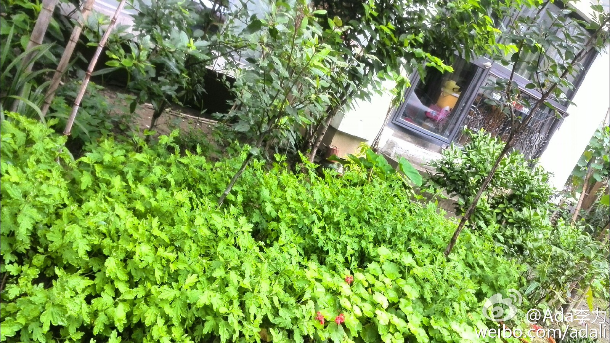

巴掌大的屋后小花园，被爸爸种满了各种植物。花卉有牡丹，芍药，月季，玫瑰，月月红，梅花; 树有海棠，桃树，石榴，枣树，橘子树，樱桃，苹果，柿子，猕猴桃; 菜有人参，生姜，红薯，豆角，韭菜，茄子，辣椒，芋头，黄瓜。—— 真怀疑挤得下否。 
我的折腾劲儿头，跟我老爸还真有些像。@Ada李力:巴掌大的屋后小花园，被爸爸种满了各种植物。花卉有牡丹，芍药，月季，玫瑰，月月红，梅花; 树有海棠，桃树，石榴，枣树，橘子树，樱桃，苹果，柿子，猕猴桃; 菜有人参，生姜，红薯，豆角，韭菜，茄子，辣椒，芋头，黄瓜。—— 真怀疑挤得下否。
今年爸爸回了趟他的老家祭祖续家谱，河南商丘（我从来没去过）。再溯源，是从山西洪洞县大槐树下迁过去的。当年朝廷让人口多的山西迁移些到河南，大家不愿迁，于是公告不愿迁的人都到槐树下集合。集合后，大兵围住，长绳一个接一个困住，步行，从山西走到河南。—— 好凄惨的历史…
回复@Strong_it:是哈。//@Strong_it:所以就有了“解手”@Ada李力:今年爸爸回了趟他的老家祭祖续家谱，河南商丘（我从来没去过）。再溯源，是从山西洪洞县大槐树下迁过去的。当年朝廷让人口多的山西迁移些到河南，大家不愿迁，于是公告不愿迁的人都到槐树下集合。集合后，大兵围住，长绳一个接一个困住，步行，从山西走到河南。—— 好凄惨的历史…